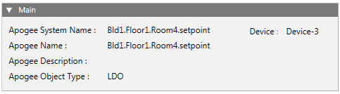
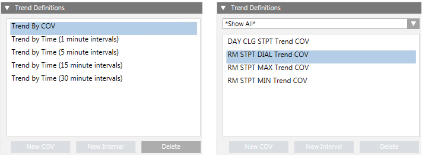
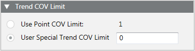
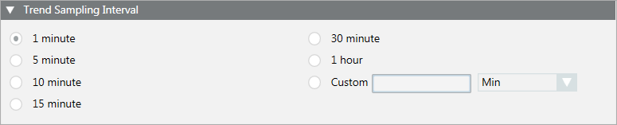
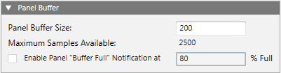
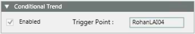

APOGEE Trend Editor Workspace

Main | |
Apogee System Name: | Displays the unique name that identifies the point or TEC in the Desigo CC database. |
Device: | Displays the name of the device where a point resides, or the FLN where the TEC is located. |
Apogee Name: | Displays the name of the point or TEC. |
Apogee Description: | Displays the description of the point or TEC, if any. |
Apogee Object Type: | Displays the type of point for which you are creating or viewing a trend definition. This field is not visible when a TEC or TEC subpoint is selected. |

Trend Definitions | |
Displays the trend definitions associated with the selected data point or TEC. You can define up to five different trend definitions for a single point or TEC subpoint type, however, only one definition can be COV. For example, if you have a TEC selected, you can add four interval trend definitions and one COV trend definition for the ROOM TEMP subpoint. | |
Subpoint List Filter | When a TEC is selected, this filter displays. By default, this is set to Show All. To display only specific subpoint types, click the drop-down arrow and select the subpoint type. |
New COV | Click to add a new COV trend definition, and complete the fields that display in the sections to the right. You can only add one COV definition per object. See the following tables for more information:
NOTE: This button is grayed out if the selected object already has a COV trend definition. |
New Interval | Click to add a new interval trend definition, and complete the fields that display in the sections to the right. You can add up to See the following tables for more information:
NOTE: This button is grayed out if the selected object has the maximum number of definitions. |
Delete | Allows you to delete the selected trend definition. NOTE: The trend definition is not deleted from the device until you click the |
 button.
button.

Trend COV Limit | |
Specifies the amount of change an analog point can encounter before the field panel collects and reports the change. The Trend COV Limit section is only active if you have an analog point selected. | |
Use Point COV Limit | If enabled, uses the displayed default value as the amount of change an analog point can make before the field panel collects and reports the change. |
User Special Trend COV Limit | If enabled, allows you to enter a value to override the default point COV Limit value. Entering your own COV limit allows you to take more precise samples of analog points. This can minimize the number of samples the field panel collects by ensuring that only "significant" COV samples are collected, thereby optimizing field panel buffer space and helping to eliminate trend data loss. |

Trend Sampling Interval | |
Defines the time interval for collecting samples. You can select one of the default sampling intervals or you can enter a custom sampling interval. The shortest interval is one minute. You are prevented from selecting an interval that is already defined for this point in another trend definition. | |
Custom | Allows you to enter a value other than the default sampling intervals. Type a number greater than zero, and then click the drop-down menu to select Min (Minutes) or Hr (Hours). |

Panel Buffer | |
Panel Buffer Size | Defines the number of samples you want the field panel to store for the point in trend. The number cannot be less than five, but must be less than or equal to the number in Maximum Samples Available field. By default, this is set to 200. If desired, type a number to change the value. |
Maximum Samples Available | Displays the maximum number you can enter into the Panel Buffer Size field. The Maximum Samples Available field displays a number greater than 5 and less than 2500, representing the maximum number of samples a field panel can store for the point in trend. When there is enough memory at the field panel, the Maximum Samples Available field displays 2500. |
Enable Panel “Buffer Full” Notification at | When checked, Desigo CC is notified when the trend buffer for the definition has reached the specified percentage full, and then the collection occurs. If the buffer reaches 100% full, old values are overwritten by new ones and data is lost. If unchecked, the buffer reaches full, old values are overwritten by new ones and data is lost. This is useful for definitions where there is no predictable upload interval. By default, when checked, this is set to 80%. If desired, type a number to change the value. |

Conditional Trend | |
Conditional trending allows point trending based on a trigger point. When enabled, it creates a historical trend data that only shows trend samples when the trigger point is activated (for example, gone from Off to On). When disabled, the trend point is always trending. Only Apogee points can be used as trigger points. | |
Enabled | If checked, enables conditional trending. |
Trigger Point | To set the data point that you want to use for conditional trending, drag and drop the desired point from System Browser onto this field. To use a TEC subpoint, click the TEC name that displays above the |
 icon to populate the Extended Operation tab with all the subpoints. From the Extended Operation tab, drag and drop the desired subpoint onto the Trigger Point field.
icon to populate the Extended Operation tab with all the subpoints. From the Extended Operation tab, drag and drop the desired subpoint onto the Trigger Point field.Make Default | If enabled, allows you to set the current values in all sections except Conditional Trend as the default values when creating future trend definitions. Defaults are user-specific and are set separately for COV and interval trend definitions. |